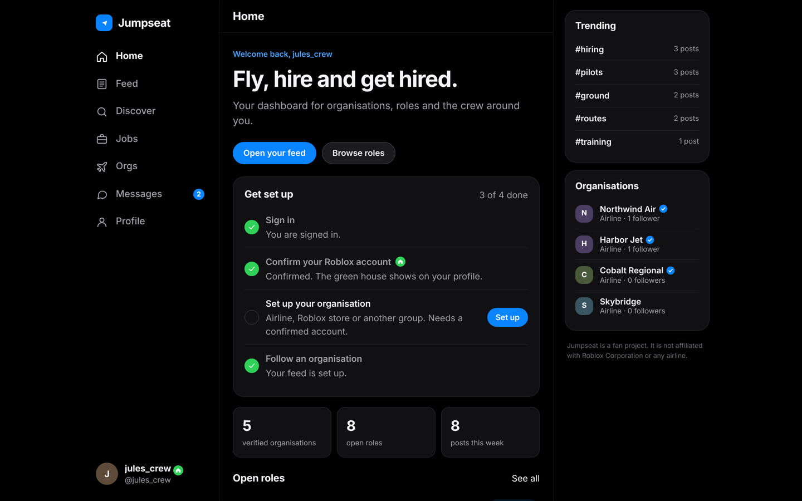
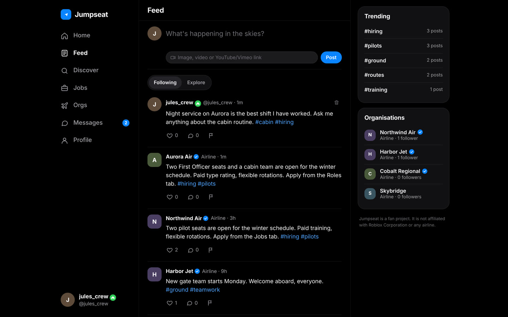
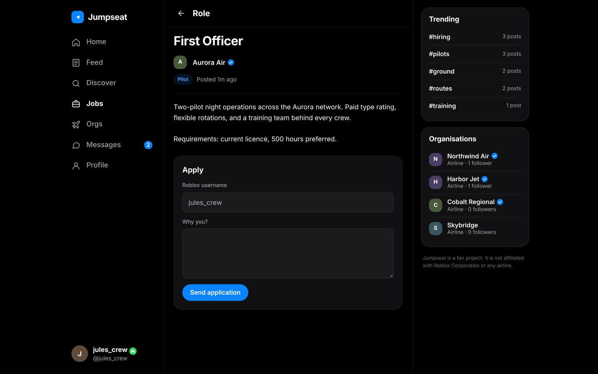
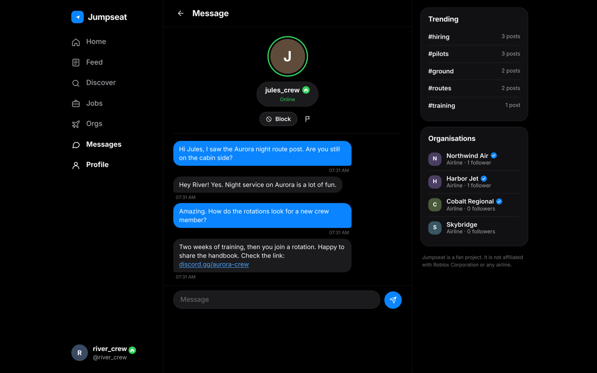
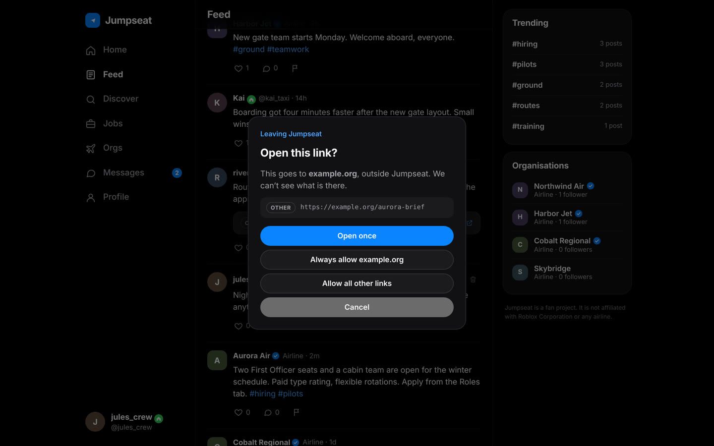
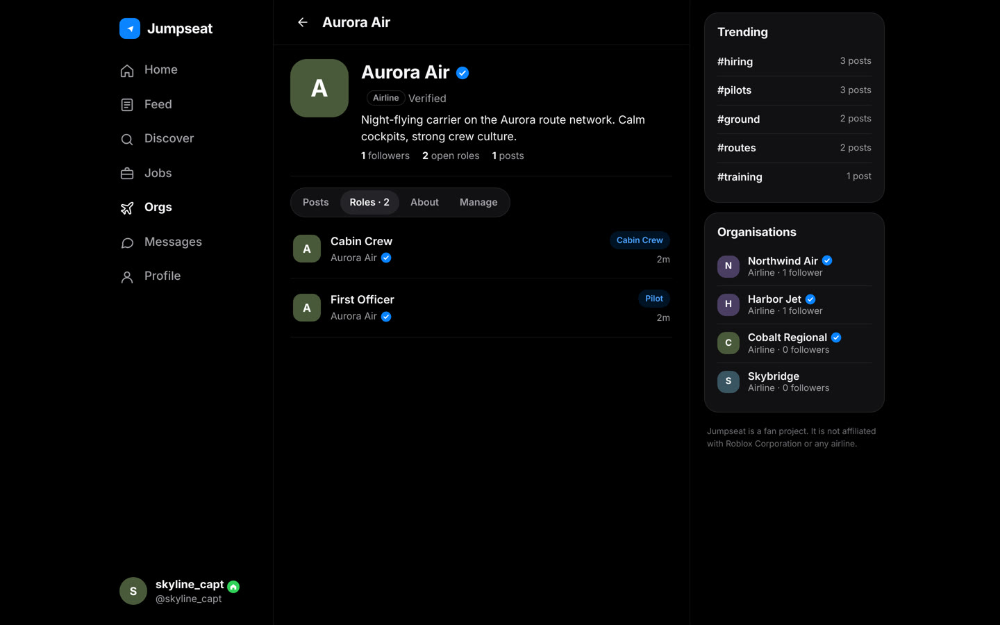
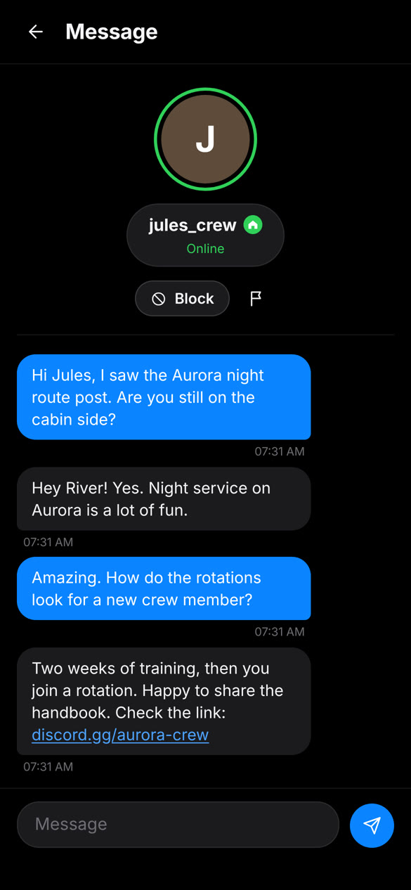
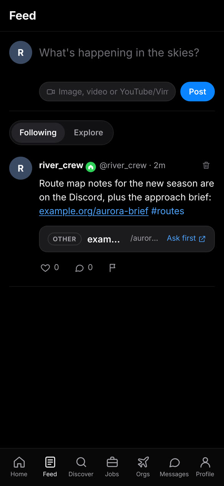

Introducing
Jumpseat
Setup, open roles, and the crews around you.

Posts, hiring news and route updates, in one feed.

Your application goes straight to their Discord.

Requests first. Presence in a glance. Blocking in one tap.

Every badge is earned, and every badge means one thing.
See where a link goes, then decide. Allow a site once, or for good.

Airlines, Roblox stores and other groups, each with its roles and its own page.



Jumpseat
Apply once. Fly with anyone.